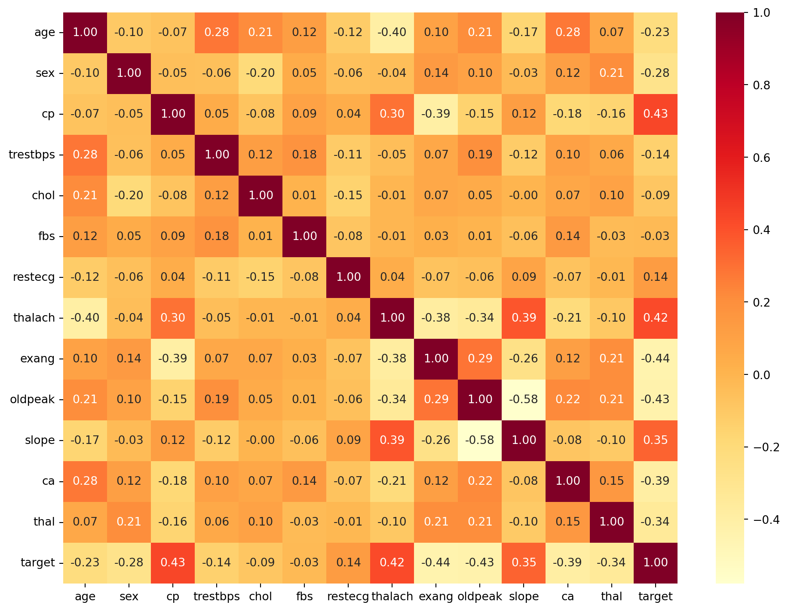
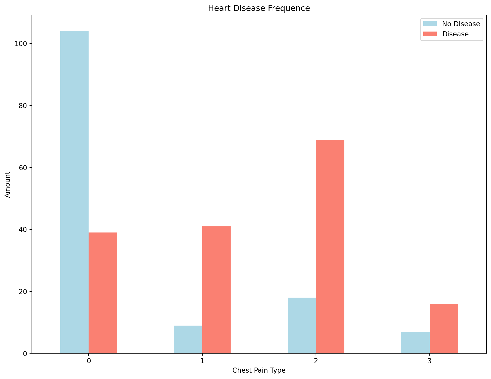
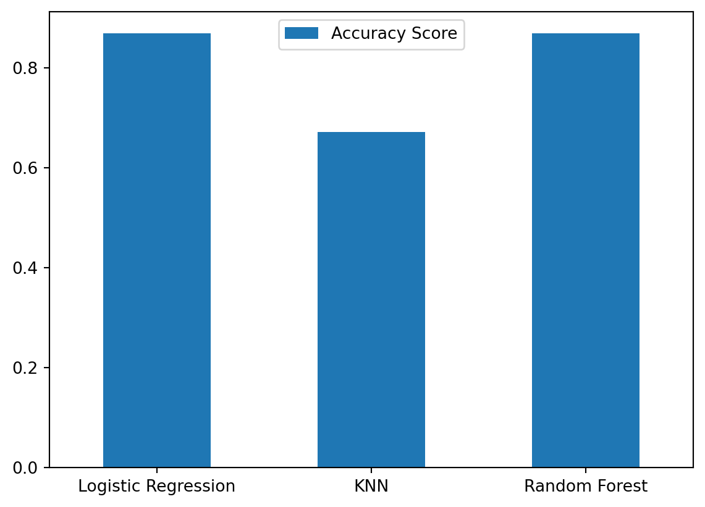

import pandas as pd
import numpy as np
import matplotlib.pyplot as plt
import seaborn as snsClassification
Statistics
Python
Machine Learning
Using Heart Disease Dataset to Predict the Patient by Classification
Introduction
Machine Learning process can be outlined as follow:
- Problem Definition
- What problem are we trying to solve?
- Data
- What data do we have? Do we need to do data cleaning?
- Evalution
- Which problem define well?
- Features
- What feature should we model?
- Modelling
- What kind of model should we use?
- Experiment
- Which model is suitable? How can we tune our model?
Once we define the problem, we could also know which questions could be classified the type of estimator. Here will provide a brieft estimator map for solving machine leaning problem.
https://scikit-learn.org/stable/tutorial/machine_learning_map/index.html
Problem Definition
Our case is about heart disease predict. The problem is be solved by the binary classification.
In a statement,
Based on clinical parameters for a patient, can we predict whether or not they have heart disease?
Libraries Section:
Models
Above question let us know that we will use classification, and we could take a reference from Scikit-Learn Map to choose model we want to compare.
In our cases, we choose Logistic Regression model, KNN model, and Random Forest Classifer.
from sklearn.linear_model import LogisticRegression
from sklearn.neighbors import KNeighborsClassifier
from sklearn.ensemble import RandomForestClassifierModel Evalution Library
from sklearn.model_selection import train_test_splitData
The origin data comes from the UCI Machine Learning Repository. >Here is the link: https://archive.ics.uci.edu/ml/datasets/heart+Disease
In addition, we found this data from Kaggle. >Here is the link: https://www.kaggle.com/datasets/sumaiyatasmeem/heart-disease-classification-dataset
This database contains 76 attributes, but all published experiments refer to using a subset of 14 of them.
So here, we create the data dictionary:
Data Dictionary
- age - age in years
- sex - (1 = male; 0 = female)
- cp - chest pain type
- 0: Typical angina: chest pain related decrease blood supply to the heart
- 1: Atypical angina: chest pain not related to heart
- 2: Non-anginal pain: typically esophageal spasms (non heart related)
- 3: Asymptomatic: chest pain not showing signs of disease
- trestbps - resting blood pressure (in mm Hg on admission to the hospital) anything above 130-140 is typically cause for concern
- chol - serum cholestoral in mg/dl
- serum = LDL + HDL + .2 * triglycerides
- above 200 is cause for concern
- fbs - (fasting blood sugar > 120 mg/dl) (1 = true; 0 = false)
- ‘>126’ mg/dL signals diabetes
- restecg - resting electrocardiographic results
- 0: Nothing to note
- 1: ST-T Wave abnormality
- can range from mild symptoms to severe problems
- signals non-normal heart beat
- 2: Possible or definite left ventricular hypertrophy
- Enlarged heart’s main pumping chamber
- thalach - maximum heart rate achieved
- exang - exercise induced angina (1 = yes; 0 = no)
- oldpeak - ST depression induced by exercise relative to rest looks at stress of heart during excercise unhealthy heart will stress more
- slope - the slope of the peak exercise ST segment
- 0: Upsloping: better heart rate with excercise (uncommon)
- 1: Flatsloping: minimal change (typical healthy heart)
- 2: Downslopins: signs of unhealthy heart
- ca - number of major vessels (0-3) colored by flourosopy
- colored vessel means the doctor can see the blood passing through
- the more blood movement the better (no clots)
- thal - thalium stress result
- 1,3: normal
- 6: fixed defect: used to be defect but ok now
- 7: reversable defect: no proper blood movement when excercising
- target - have disease or not (1=yes, 0=no) (= the predicted attribute)
df = pd.read_csv('../../dataset/HeartDisease/heart-disease.csv');
df| age | sex | cp | trestbps | chol | fbs | restecg | thalach | exang | oldpeak | slope | ca | thal | target | |
|---|---|---|---|---|---|---|---|---|---|---|---|---|---|---|
| 0 | 63 | 1 | 3 | 145 | 233 | 1 | 0 | 150 | 0 | 2.3 | 0 | 0 | 1 | 1 |
| 1 | 37 | 1 | 2 | 130 | 250 | 0 | 1 | 187 | 0 | 3.5 | 0 | 0 | 2 | 1 |
| 2 | 41 | 0 | 1 | 130 | 204 | 0 | 0 | 172 | 0 | 1.4 | 2 | 0 | 2 | 1 |
| 3 | 56 | 1 | 1 | 120 | 236 | 0 | 1 | 178 | 0 | 0.8 | 2 | 0 | 2 | 1 |
| 4 | 57 | 0 | 0 | 120 | 354 | 0 | 1 | 163 | 1 | 0.6 | 2 | 0 | 2 | 1 |
| ... | ... | ... | ... | ... | ... | ... | ... | ... | ... | ... | ... | ... | ... | ... |
| 298 | 57 | 0 | 0 | 140 | 241 | 0 | 1 | 123 | 1 | 0.2 | 1 | 0 | 3 | 0 |
| 299 | 45 | 1 | 3 | 110 | 264 | 0 | 1 | 132 | 0 | 1.2 | 1 | 0 | 3 | 0 |
| 300 | 68 | 1 | 0 | 144 | 193 | 1 | 1 | 141 | 0 | 3.4 | 1 | 2 | 3 | 0 |
| 301 | 57 | 1 | 0 | 130 | 131 | 0 | 1 | 115 | 1 | 1.2 | 1 | 1 | 3 | 0 |
| 302 | 57 | 0 | 1 | 130 | 236 | 0 | 0 | 174 | 0 | 0.0 | 1 | 1 | 2 | 0 |
303 rows × 14 columns
Explore Data Analysis (EDA)
Once we’ve imported dataset, we could start to explore the dataset to find some pattern. When we get a dataset, it’s hard to tell and understand the situation. That’s why we do some visualization for prelimary research questions in the beginning, and then, we can observer the correletion between independent variables and dependent variables.
Here, we want to fouce on the 3 classification algorithms applying in our cases, so we will breeze throught it and just demonstrate one situation to find a pattern. For example:
Does chest pain (cp), age, or other attributes relate to whether or not someone has heart disease?
In the above hypothesis, we could use correletion matrix.
So, what’s correletion matrix? It’s a big table telling us how each independent variable is related to each other.
ps. You can take above reference to know what is cp.
Correletion Matrix
df.corr()| age | sex | cp | trestbps | chol | fbs | restecg | thalach | exang | oldpeak | slope | ca | thal | target | |
|---|---|---|---|---|---|---|---|---|---|---|---|---|---|---|
| age | 1.000000 | -0.098447 | -0.068653 | 0.279351 | 0.213678 | 0.121308 | -0.116211 | -0.398522 | 0.096801 | 0.210013 | -0.168814 | 0.276326 | 0.068001 | -0.225439 |
| sex | -0.098447 | 1.000000 | -0.049353 | -0.056769 | -0.197912 | 0.045032 | -0.058196 | -0.044020 | 0.141664 | 0.096093 | -0.030711 | 0.118261 | 0.210041 | -0.280937 |
| cp | -0.068653 | -0.049353 | 1.000000 | 0.047608 | -0.076904 | 0.094444 | 0.044421 | 0.295762 | -0.394280 | -0.149230 | 0.119717 | -0.181053 | -0.161736 | 0.433798 |
| trestbps | 0.279351 | -0.056769 | 0.047608 | 1.000000 | 0.123174 | 0.177531 | -0.114103 | -0.046698 | 0.067616 | 0.193216 | -0.121475 | 0.101389 | 0.062210 | -0.144931 |
| chol | 0.213678 | -0.197912 | -0.076904 | 0.123174 | 1.000000 | 0.013294 | -0.151040 | -0.009940 | 0.067023 | 0.053952 | -0.004038 | 0.070511 | 0.098803 | -0.085239 |
| fbs | 0.121308 | 0.045032 | 0.094444 | 0.177531 | 0.013294 | 1.000000 | -0.084189 | -0.008567 | 0.025665 | 0.005747 | -0.059894 | 0.137979 | -0.032019 | -0.028046 |
| restecg | -0.116211 | -0.058196 | 0.044421 | -0.114103 | -0.151040 | -0.084189 | 1.000000 | 0.044123 | -0.070733 | -0.058770 | 0.093045 | -0.072042 | -0.011981 | 0.137230 |
| thalach | -0.398522 | -0.044020 | 0.295762 | -0.046698 | -0.009940 | -0.008567 | 0.044123 | 1.000000 | -0.378812 | -0.344187 | 0.386784 | -0.213177 | -0.096439 | 0.421741 |
| exang | 0.096801 | 0.141664 | -0.394280 | 0.067616 | 0.067023 | 0.025665 | -0.070733 | -0.378812 | 1.000000 | 0.288223 | -0.257748 | 0.115739 | 0.206754 | -0.436757 |
| oldpeak | 0.210013 | 0.096093 | -0.149230 | 0.193216 | 0.053952 | 0.005747 | -0.058770 | -0.344187 | 0.288223 | 1.000000 | -0.577537 | 0.222682 | 0.210244 | -0.430696 |
| slope | -0.168814 | -0.030711 | 0.119717 | -0.121475 | -0.004038 | -0.059894 | 0.093045 | 0.386784 | -0.257748 | -0.577537 | 1.000000 | -0.080155 | -0.104764 | 0.345877 |
| ca | 0.276326 | 0.118261 | -0.181053 | 0.101389 | 0.070511 | 0.137979 | -0.072042 | -0.213177 | 0.115739 | 0.222682 | -0.080155 | 1.000000 | 0.151832 | -0.391724 |
| thal | 0.068001 | 0.210041 | -0.161736 | 0.062210 | 0.098803 | -0.032019 | -0.011981 | -0.096439 | 0.206754 | 0.210244 | -0.104764 | 0.151832 | 1.000000 | -0.344029 |
| target | -0.225439 | -0.280937 | 0.433798 | -0.144931 | -0.085239 | -0.028046 | 0.137230 | 0.421741 | -0.436757 | -0.430696 | 0.345877 | -0.391724 | -0.344029 | 1.000000 |
# Visualized Correletion Matrix by Heatmap
correletion_matrix = df.corr()
fig, ax = plt.subplots(figsize = (12, 9));
ax = sns.heatmap(correletion_matrix,
annot = True,
fmt = '.2f',
cmap = 'YlOrRd');
A higher positve value means a potential possitive correletion; a higher negative means a potential negative correletion.
So, based on the contribution matrix, as “cp” goes up, the “target value” should also goes up.
We can do a basic graph to visualize the relation between cp and target.
# Crosstab for cp and target
pd.crosstab(df.cp, df.target).plot(kind = 'bar',
figsize = (12, 9),
color = ['lightblue', 'salmon']);
plt.title('Heart Disease Frequence');
plt.xlabel('Chest Pain Type');
plt.ylabel('Amount');
plt.legend(['No Disease', 'Disease']);
plt.xticks(rotation = 0);
Even though, Chest Pain Type 3 goes down, the ratio of disease to no disease is still much higher.
Correlation Matrix could be a insight that we want to sort of figure out on our own. This is the purpose of EDA.
Preparing Data for Machine Learning Model
Before Modeling, we need to do two things:
- Split the dataset into features & labels
- Split the dataset into trainning dataset & testing dataset
Why?
First, because we want to do binary classification, spliting the dataset into features and labels is very important. Second, if we don’t split the dataset into trainning dataset & testing dataset, how would you know know how well your model goes on a new patient not included in the original full data?
# Split the dataset into features and label
X = df.drop('target', axis = 1);
y = df['target']X| age | sex | cp | trestbps | chol | fbs | restecg | thalach | exang | oldpeak | slope | ca | thal | |
|---|---|---|---|---|---|---|---|---|---|---|---|---|---|
| 0 | 63 | 1 | 3 | 145 | 233 | 1 | 0 | 150 | 0 | 2.3 | 0 | 0 | 1 |
| 1 | 37 | 1 | 2 | 130 | 250 | 0 | 1 | 187 | 0 | 3.5 | 0 | 0 | 2 |
| 2 | 41 | 0 | 1 | 130 | 204 | 0 | 0 | 172 | 0 | 1.4 | 2 | 0 | 2 |
| 3 | 56 | 1 | 1 | 120 | 236 | 0 | 1 | 178 | 0 | 0.8 | 2 | 0 | 2 |
| 4 | 57 | 0 | 0 | 120 | 354 | 0 | 1 | 163 | 1 | 0.6 | 2 | 0 | 2 |
| ... | ... | ... | ... | ... | ... | ... | ... | ... | ... | ... | ... | ... | ... |
| 298 | 57 | 0 | 0 | 140 | 241 | 0 | 1 | 123 | 1 | 0.2 | 1 | 0 | 3 |
| 299 | 45 | 1 | 3 | 110 | 264 | 0 | 1 | 132 | 0 | 1.2 | 1 | 0 | 3 |
| 300 | 68 | 1 | 0 | 144 | 193 | 1 | 1 | 141 | 0 | 3.4 | 1 | 2 | 3 |
| 301 | 57 | 1 | 0 | 130 | 131 | 0 | 1 | 115 | 1 | 1.2 | 1 | 1 | 3 |
| 302 | 57 | 0 | 1 | 130 | 236 | 0 | 0 | 174 | 0 | 0.0 | 1 | 1 | 2 |
303 rows × 13 columns
y0 1
1 1
2 1
3 1
4 1
..
298 0
299 0
300 0
301 0
302 0
Name: target, Length: 303, dtype: int64# Split the dataset into trainning dataset & testing dataset
np.random.seed(24)
X_train, X_test, y_train, y_test = train_test_split(X,y,test_size = 0.2)X_train| age | sex | cp | trestbps | chol | fbs | restecg | thalach | exang | oldpeak | slope | ca | thal | |
|---|---|---|---|---|---|---|---|---|---|---|---|---|---|
| 105 | 68 | 0 | 2 | 120 | 211 | 0 | 0 | 115 | 0 | 1.5 | 1 | 0 | 2 |
| 200 | 44 | 1 | 0 | 110 | 197 | 0 | 0 | 177 | 0 | 0.0 | 2 | 1 | 2 |
| 260 | 66 | 0 | 0 | 178 | 228 | 1 | 1 | 165 | 1 | 1.0 | 1 | 2 | 3 |
| 102 | 63 | 0 | 1 | 140 | 195 | 0 | 1 | 179 | 0 | 0.0 | 2 | 2 | 2 |
| 183 | 58 | 1 | 2 | 112 | 230 | 0 | 0 | 165 | 0 | 2.5 | 1 | 1 | 3 |
| ... | ... | ... | ... | ... | ... | ... | ... | ... | ... | ... | ... | ... | ... |
| 207 | 60 | 0 | 0 | 150 | 258 | 0 | 0 | 157 | 0 | 2.6 | 1 | 2 | 3 |
| 123 | 54 | 0 | 2 | 108 | 267 | 0 | 0 | 167 | 0 | 0.0 | 2 | 0 | 2 |
| 129 | 74 | 0 | 1 | 120 | 269 | 0 | 0 | 121 | 1 | 0.2 | 2 | 1 | 2 |
| 145 | 70 | 1 | 1 | 156 | 245 | 0 | 0 | 143 | 0 | 0.0 | 2 | 0 | 2 |
| 192 | 54 | 1 | 0 | 120 | 188 | 0 | 1 | 113 | 0 | 1.4 | 1 | 1 | 3 |
242 rows × 13 columns
X_test| age | sex | cp | trestbps | chol | fbs | restecg | thalach | exang | oldpeak | slope | ca | thal | |
|---|---|---|---|---|---|---|---|---|---|---|---|---|---|
| 202 | 58 | 1 | 0 | 150 | 270 | 0 | 0 | 111 | 1 | 0.8 | 2 | 0 | 3 |
| 186 | 60 | 1 | 0 | 130 | 253 | 0 | 1 | 144 | 1 | 1.4 | 2 | 1 | 3 |
| 94 | 45 | 0 | 1 | 112 | 160 | 0 | 1 | 138 | 0 | 0.0 | 1 | 0 | 2 |
| 218 | 65 | 1 | 0 | 135 | 254 | 0 | 0 | 127 | 0 | 2.8 | 1 | 1 | 3 |
| 47 | 47 | 1 | 2 | 138 | 257 | 0 | 0 | 156 | 0 | 0.0 | 2 | 0 | 2 |
| ... | ... | ... | ... | ... | ... | ... | ... | ... | ... | ... | ... | ... | ... |
| 184 | 50 | 1 | 0 | 150 | 243 | 0 | 0 | 128 | 0 | 2.6 | 1 | 0 | 3 |
| 264 | 54 | 1 | 0 | 110 | 206 | 0 | 0 | 108 | 1 | 0.0 | 1 | 1 | 2 |
| 70 | 54 | 1 | 2 | 120 | 258 | 0 | 0 | 147 | 0 | 0.4 | 1 | 0 | 3 |
| 290 | 61 | 1 | 0 | 148 | 203 | 0 | 1 | 161 | 0 | 0.0 | 2 | 1 | 3 |
| 152 | 64 | 1 | 3 | 170 | 227 | 0 | 0 | 155 | 0 | 0.6 | 1 | 0 | 3 |
61 rows × 13 columns
y_train105 1
200 0
260 0
102 1
183 0
..
207 0
123 1
129 1
145 1
192 0
Name: target, Length: 242, dtype: int64y_test202 0
186 0
94 1
218 0
47 1
..
184 0
264 0
70 1
290 0
152 1
Name: target, Length: 61, dtype: int64Now we’ve had our data split into training and testing dataset, and we could use 3 different machine learning models to demonstrate the preliminary model.
- Logistic Regression
- K-Neareast Neighbors Classifer
- Random Forest Classifier
In this note, we just compare 3 different classification models, so we don’t do tuning the model find the important feature or others.
# Save Model Score
M_Score = {};Logistic Regression Model
# Set Random Seed
np.random.seed(24);
# Logistic Regression Model
log_reg_model = {'Logistic Regression': LogisticRegression()};
# Fit the model to the training data
key = list(log_reg_model.keys())[0];
value = log_reg_model[key];
value.fit(X_train, y_train);
M_Score [key] = value.score(X_test, y_test);
M_Score/Users/tianyu/miniconda3/lib/python3.11/site-packages/sklearn/linear_model/_logistic.py:460: ConvergenceWarning:
lbfgs failed to converge (status=1):
STOP: TOTAL NO. of ITERATIONS REACHED LIMIT.
Increase the number of iterations (max_iter) or scale the data as shown in:
https://scikit-learn.org/stable/modules/preprocessing.html
Please also refer to the documentation for alternative solver options:
https://scikit-learn.org/stable/modules/linear_model.html#logistic-regression
{'Logistic Regression': 0.8688524590163934}KNN Model
# Set Random Seed
np.random.seed(24);
# KNN Model
log_reg_model = {'KNN': KNeighborsClassifier()};
# Fit the model to the training data
key = list(log_reg_model.keys())[0];
value = log_reg_model[key];
value.fit(X_train, y_train);
M_Score [key] = value.score(X_test, y_test);
M_Score{'Logistic Regression': 0.8688524590163934, 'KNN': 0.6721311475409836}Random Forest Model
# Set Random Seed
np.random.seed(24);
# KNN Model
log_reg_model = {'Random Forest': RandomForestClassifier()};
# Fit the model to the training data
key = list(log_reg_model.keys())[0];
value = log_reg_model[key];
value.fit(X_train, y_train);
M_Score [key] = value.score(X_test, y_test);
M_Score{'Logistic Regression': 0.8688524590163934,
'KNN': 0.6721311475409836,
'Random Forest': 0.8688524590163934}Model Comparison
M_Compare = pd.DataFrame(M_Score, index = ['Accuracy Score']);
M_Compare.T.plot.bar();
plt.xticks(rotation = 0);
Here, we get the accuracy score for 3 different models. As you can see, this is the preliminary results by 3 different models. If we want the result fall into 95% or higher, we need to know tuning or finding important features.